AI Website Generator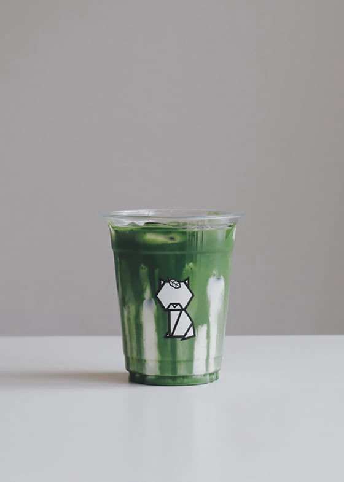
Mix ingredients below in a measuring cup with ASAGAO / Chasen Whisk until creamy and no visible clumps:
a. Fresh Milk – 70mL or 1/3 cup
b. Granulated sugar – 2 - 3 tsp / 15mL Sugar syrup (60mL milk if sweetened)
c. REN / Matcha powder – 6g or 2 tsp + 1/4 tsp
Pour the mixture above into a serving cup with 65mL of milk with ice.
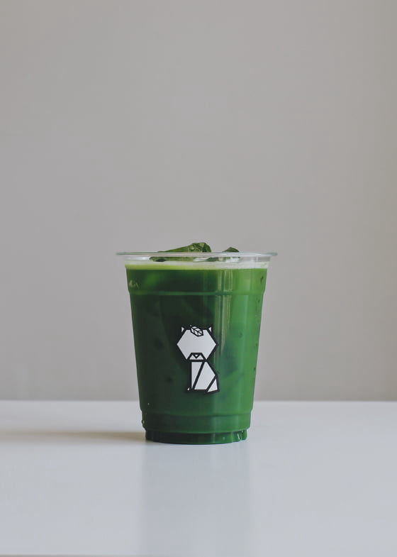
Mix ingredients below in a measuring cup with ASAGAO / Chasen Whisk until creamy and no visible clumps:
a. Fresh Milk – 70mL or 1/3 cup
b. Granulated sugar – 2 - 3 tsp / 15mL Sugar syrup (60mL milk if sweetened)
c. KIKU / Matcha powder – 6g or 2 tsp + 1/4 tsp
Pour the mixture above into a serving cup with 65mL of milk with ice.
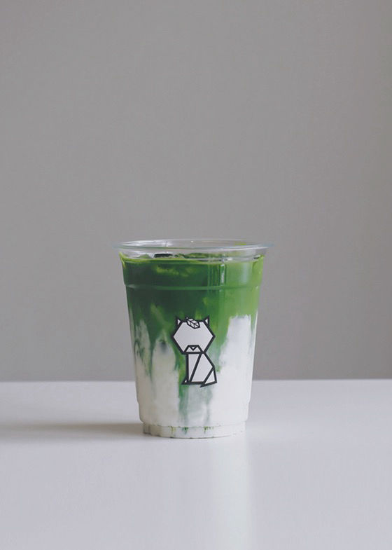
Mix ingredients below in a measuring cup with ASAGAO / Chasen Whisk until creamy and no visible clumps:
a. Fresh Milk – 70 mL or 1/3 cup
b. Granulated Sugar - 2 - 3 tsp / Sugar Syrup - 15 mL
c. AJISAI 2.0 / Matcha Powder - 6g or 2 tsp + 1/4 tsp
Pour the mixture above into 65 mL fresh milk with ice for cold latte.
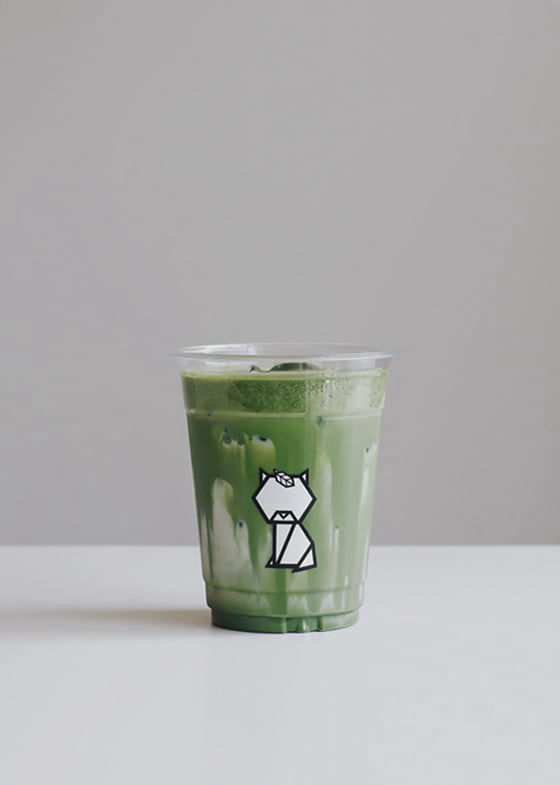
Mix ingredients below in a measuring cup with ASAGAO / Chasen Whisk until creamy and no visible clumps:
a. Fresh Milk – 70mL
b. Granulated sugar – 2 - 3 tsp / 20mL Sugar syrup (55mL milk if sweetened)
c. YURI / Matcha powder – 5g or 1 tsp + 1/2 tbsp
Pour the mixture above into a serving cup with 80mL of milk with ice.
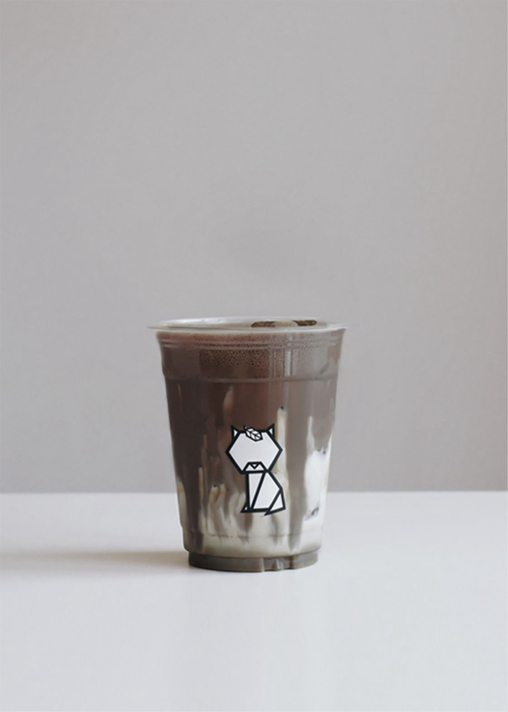
Mix ingredients below with ASAGAO / Chasen Whisk until smooth, fluffy and with no visible clumps:
a. Fresh Milk – 70mL or 1/3 cup
b. Granulated sugar – 2 tsp / Sugar Syrup 10 mL
c. AKANE / Houjicha Powder – 6g or 3 tsp
Pour the mixture above into a serving cup with 65mL of milk with ice.
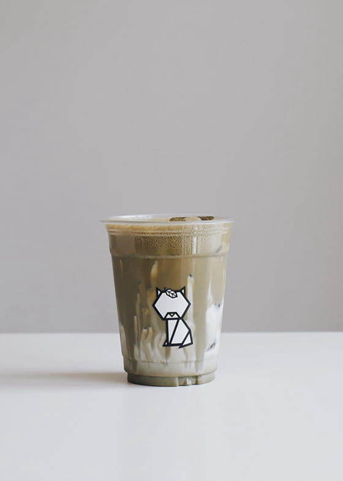
Mix ingredients below in a measuring cup with ASAGAO / Chasen Whisk until creamy and no visible clumps:
a. Fresh Milk – 70mL or 1/3 cup
b. Granulated sugar – 2 tsp / 10mL Sugar syrup (65mL milk if sweetened)
c. TSUBAKI / Houjicha powder – 5g or 2 tsp
Pour the mixture above into a serving cup with 80mL of milk with ice.
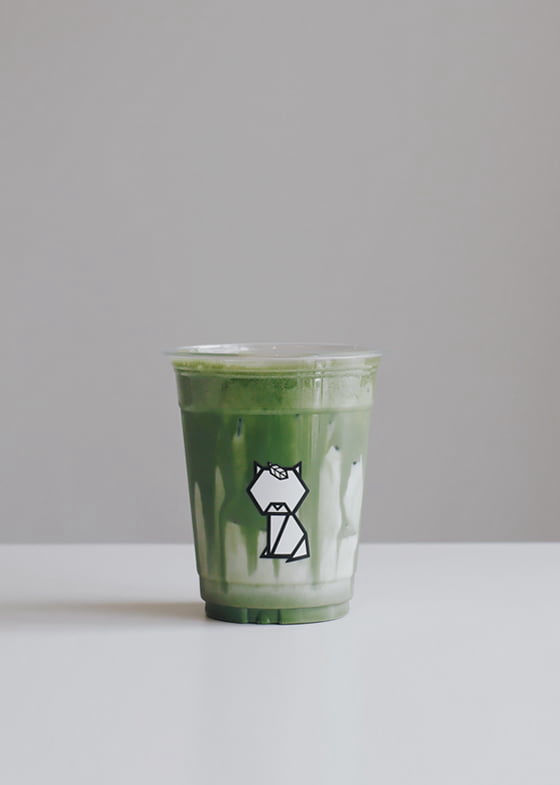
Mix ingredients below in a measuring cup with ASAGAO / Chasen Whisk until creamy and no visible clumps:
a. Fresh Milk – 65mL or 1/3 cup
b. Room Temp Water - 10 mL
c. Granulated sugar – 2 - 3 tsp / 15mL Sugar syrup (60mL milk if sweetened)
d. MOKUREN / Genmaicha powder – 6g or 3 tsp
e. Salt – 3 pinch / 0.6g
Pour the mixture above into a serving cup with 60mL of milk with ice.
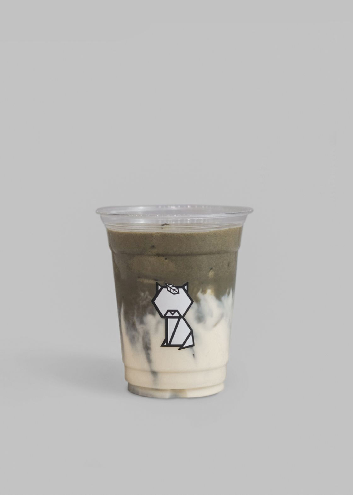
Mix ingredients below in a measuring cup with ASAGAO / Chasen Whisk until creamy and no visible clumps:
a. Fresh Milk – 75mL or 1⁄3 cup
b. Granulated sugar – 2 tsp / Sugar Syrup 10 mL
c. RIKKA / Wakoucha Powder – 5g or 2 ½ tsp
Pour the mixture above into a serving cup with 75mL of milk with ice.
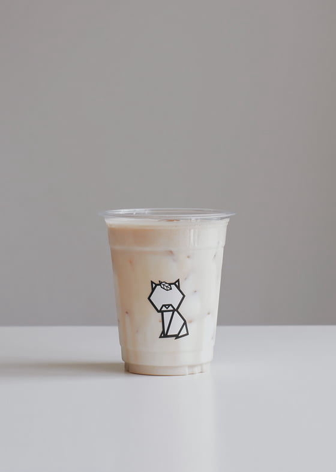
Mix ingredients below in a measuring cup with ASAGAO / Chasen Whisk until creamy and no visible clumps:
a. Fresh Milk – 75mL
b. Granulated sugar – 3 tsp / 15mL Sugar syrup (60mL milk if sweetened)
c. SUISEN / Genmai powder – 6g or 3 tsp
d. Salt – 2 pinch / 0.4g
Pour the mixture above into a serving cup with 75mL of milk with ice.
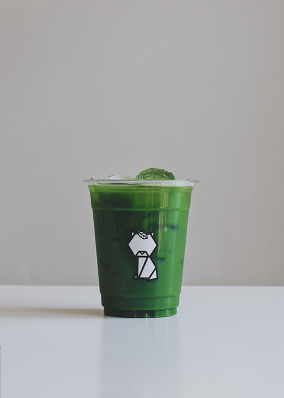
Mix ingredients below in a measuring cup with ASAGAO / Chasen Whisk until no visible clumps:
a. Room temp / cold water – 75mL
b. REN / Matcha powder – 2.5g or 1 tsp
Pour the mixture above into a serving cup with 75mL of water with ice.
Mix ingredients below in a measuring cup with ASAGAO / Chasen Whisk until no visible clumps:
a. Room temp / cold water – 75mL
b. KIKU / Matcha powder – 2.5g or 1 tsp
Pour the mixture above into a serving cup with 75mL of water with ice.
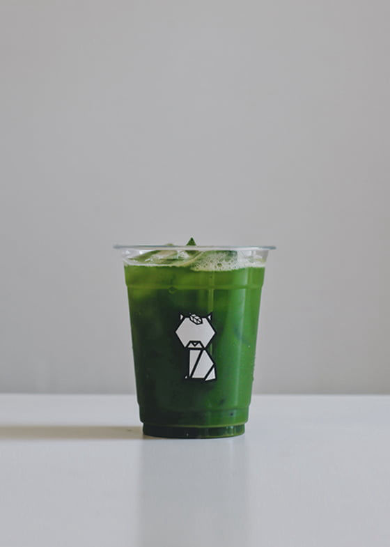
Mix ingredients below in a measuring cup with ASAGAO / Chasen Whisk until no visible clumps:
a. Room temp / Cold water – 50mL
b. AJISAI / Matcha powder – 2g or 1 tsp
Pour the mixture above into a serving cup with 100mL of water with ice.
Mix ingredients below in a measuring cup with ASAGAO / Chasen Whisk until no visible clumps:
a. Room temp / cold water – 75mL
b. Granulated sugar – 3tsp / 15mL Sugar Syrup (60mL water if sweetened)
c. YURI / Matcha powder – 2.5g or 1 tsp
Pour the mixture above into a serving cup with 75mL of water with ice.
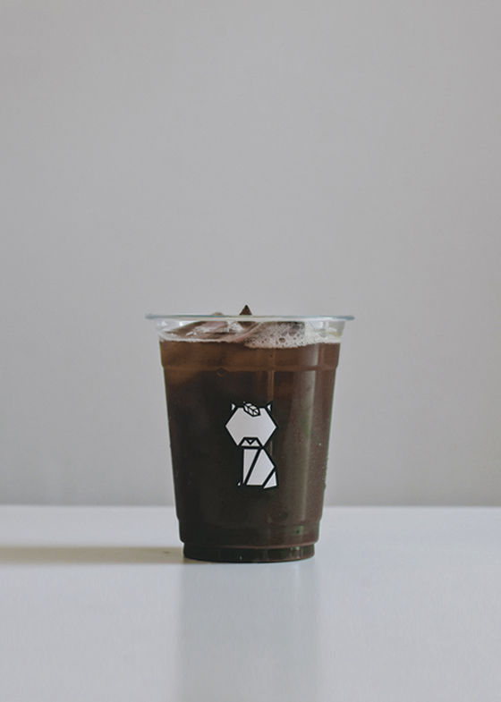
Mix ingredients below in a measuring cup with ASAGAO / Chasen Whisk until no visible clumps:
a. AKANE / Houjicha Powder – 2g or ¾ tsp
b. Room temp / cold water – 150mL or ½ cup
Pour the mixture above into a serving cup with ice.
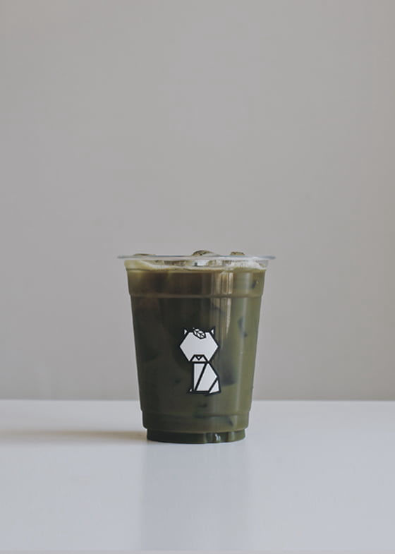
Mix ingredients below in a measuring cup with ASAGAO / Chasen whisk until no visible clumps:
a. Room temp / cold water – 75mL
b. Granulated sugar – 2tsp / 10mL Sugar Syrup (65mL water if sweetened)
c. TSUBAKI / Houjicha powder – 1g or ¾ tsp (1.5g for sweetened)
Pour the mixture above into a serving cup with 75mL of water with ice.
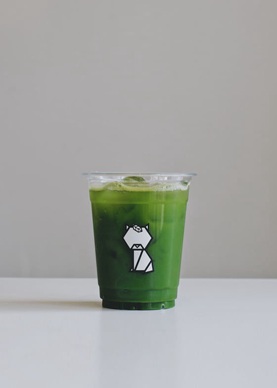
Mix ingredients below in a measuring cup with ASAGAO / Chasen Whisk until no visible clumps:
a. Room temp / cold water – 75mL
b. Granulated sugar – 2tsp / 10mL Sugar Syrup (65mL water if sweetened)
c. MOKUREN / Genmaicha powder – 1.5g or ¾ tsp
d. Salt – 2 pinch / 0.4g
Pour the mixture above into a serving cup with 75mL of water with ice.
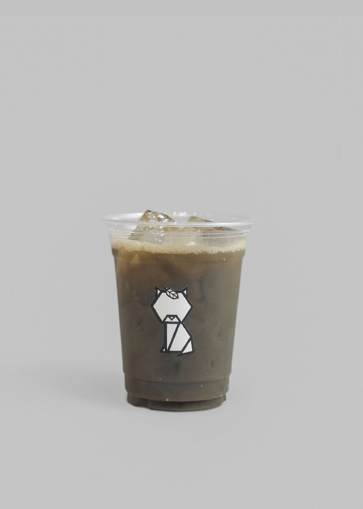
Mix ingredients below in a measuring cup with ASAGAO / Chasen Whisk until no visible clumps:
a. Room temp / cold water – 75mL
b. Granulated sugar –2 tsp / 10mL Sugar Syrup (65mL water if sweetened)
c. RIKKA / Wakoucha Powder – 1g or ½ tsp
Pour the mixture above into a serving cup with 75mL of water with ice.
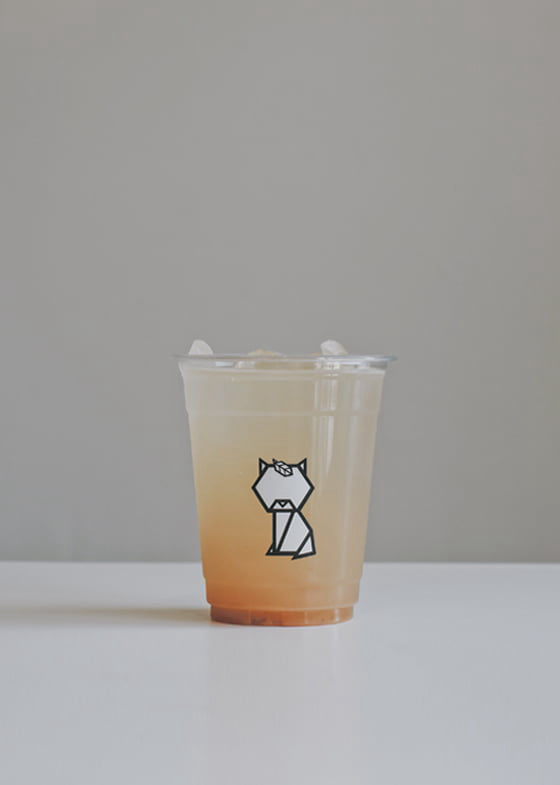
Mix ingredients below in a measuring cup with ASAGAO / Chasen Whisk until no visible clumps:
a. Room temp / cold water – 75mL
b. Granulated sugar – 2tsp / 10mL Sugar Syrup (65mL water if sweetened)
c. SUISEN / Genmai powder – 2g or 1 tsp
d. Salt – 2 pinch / 0.4g
Pour the mixture above into a serving cup with 75mL of water with ice.
AI Website Generator